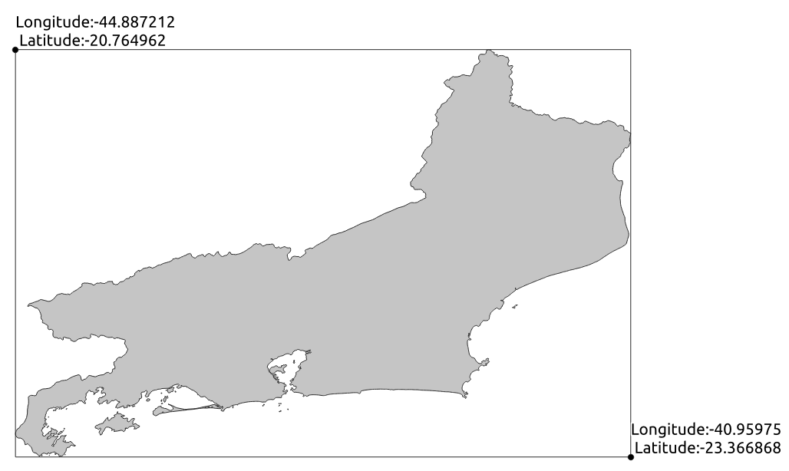

Criando um sistema para gestão de dados geográficos de forma simples e robusta II

Criando um sistema para gestão de dados geográficos de forma simples e robusta II
Artigo publicado também no linkedin
Na primeira publicação onde exploro a possibilidade de implementar um sistema de gestão de dados geoespaciais com Django, sem a necessidade de usar um servidor com PostGIS, vimos sobre:
- o
django-geojsonpara simular um campo geográfico no models; - o
geojsonpara criar um objeto da classe geojson e realizar as validações necessárias para garantir robustez do sistema; - a criação do formulário de registro de dados usando o
ModelForm;
Agora é hora de evoluir e expandir um pouco o sistema criado. Nessa publicação vamos criar validadores de longitude e latitude para poder restringir a inserção de dados a uma determinada região. Com isso, o próximo passo (e artigo) será criar o webmap no nosso sistema. Mas isso fica para breve.
Vamos ao que interessa:
Criando validadores de longitude e latitude
Sobre os validadores:
Os validadores (validators, em inglês) fazem parte do sistema de validação de formulários e de campos do Django. Ao criarmos campos de uma determinada classe no nosso modelo, como por exemplo integer, o Django cuidará automaticamente da validação do valor passado a este campo pelo formulário, retornando um erro quando o usuário ingressar um valor de texto no campo em questão, por exemplo. O interessante é que além dos validadores já implementados para cada classe, podemos criar outros, conforme a nossa necessidade.
Por que necessitamos um validador para os campos de
latitudeelongitude?
Como estou explorando o desenvolvimento de um sistema de gestão de dados geográficos com recursos limitados, ou seja, sem uma infraestrutura de operações e consultas espaciais, não poderei consultar se o par de coordenadas inserido pelo usuário está contido nos limites de um determinado estado (uma operação clássica com dados geográficos). Não ter essa possibilidade de validação poderá colocar em risco a qualidade do dado inserido.
E como não se abre mão quando a questão é qualidade, uma saída será a criação de validadores personalizados para os campos de latitude e longitude, garantindo que esses possuem valores condizentes à nossa área de interesse.
O que precisamos saber:
os validators são funções que recebem um valor, apenas (neste caso, o valor inserido pelo usuário no campo a ser validado), que passará por uma lógica de validação retornando um ValidationError quando o valor inserido não passar na validação. Com o ValidationError podemos customizar uma mensagem de erro, indicando ao usuário o motivo do valor não ter sido considerado válido, para que o mesmo corrija.
Então, criarei validadores dos campos de latitude e longitude para sempre que entrarem com valores que não contemplem a área do estado do Rio de Janeiro, um ValidationError será retornado.
⚠️ Essa não é uma solução ótima já que, dessa forma, estamos considerando o bounding box do estado em questão, e com isso haverá áreas onde as coordenadas serão válidas, ainda que não estejam internas ao território estadual. Ainda assim, acredito que seja uma solução boa suficiente para alguns casos, principalmente por não depender de toda infraestrutura de GIS.
O que é um bounding box?
Bounding box poderia ser traduzido por “retângulo envolvente” do estado, ou de uma feição espacial. Na imagem abaixo, vemos o território do estado do Rio de Janeiro e o retângulo envolvente que limita as suas coordenadas máximas e mínimas de longitude e latitude.

Percebam que, como mencionado antes, o que conseguimos garantir é que os pares de coordenadas estejam em alguma área interna ao retângulo em questão o que não garante que as mesmas estejam no território do estado do Rio de Janeiro.
Por uma questão de organização, criei no settings.py do meu projeto as variáveis com os valores máximos e mínimos de latitude e longitude. Essa proposta surgiu do cuducos, e achei que valia a pena implementar. Entendo que é mais organizado e evita possíveis falhas humanas, caso os mesmos valores tenham que ser usados em outras partes do sistema.
Ao fim do meu settings.py, adicionei:
# settings.py
BOUNDING_BOX_LAT_MAX = -20.764962
BOUNDING_BOX_LAT_MIN = -23.366868
BOUNDING_BOX_LON_MAX = -40.95975
BOUNDING_BOX_LON_MIN = -44.887212
Agora, sim. Vamos criar os testes:
se você não entendeu o motivo pelo qual eu começo criando testes, dá uma olhada na primeira publicação. Nela comento um pouco sobre a abordagem Test Driven Development (TDD).
Criando os testes:
No tests.py, criei uma nova classe de teste TestCase, com o objetivo de testar os validadores simulando o uso do FenomenoForm. Por isso criei staticmethod chamado create_form que cria um dicionário com chaves e valores válidos do formulário em questão, que ao receber um conjunto de argumentos nomeados **kwargs terá tais argumentos atualizados e usados para instanciar e retornar o FenomenoForm.
Fiz isso para, a cada teste, ter uma instância do FenoenoForm alterando apenas os campos que quero simular valores a serem validados, sem ter que passar sempre todos os valores do ModelForm. Assim, eu posso criar diferentes métodos de Test Case, usando o método criado anteriormente alterando o valor inicial a um inválido, testando se de fato um ValidationError é retornado.
# tests.py
class FenomenoFormValidatorsTest(TestCase):
@staticmethod
def create_form(**kwargs):
valid_form = {
'nome': 'Teste',
'data': '2020-01-01',
'hora': '09:12:12',
'longitude': -42,
'latitude': -21}
valid_form.update(**kwargs)
form = FenomenoForm(valid_form)
return form
Nos métodos de teste uso primeiro o assertFalse do método de validação do formulário (form.is_valid()) para confirmar que o mesmo não é valido para, em seguida, testar com o assertEqual se o texto da mensagem de erro é o que esperamos. Veja o link a seguir para saber sobre outros assertions.
# tests.py
def test_max_longitude_raises_error(self):
form = self.create_form(longitude='-45')
self.assertFalse(form.is_valid())
self.assertEqual(form.errors["longitude"][0], 'Coordenada longitude fora do contexto do estado do Rio de Janeiro')
def test_min_longitude_raises_error(self):
form = self.create_form(longitude='-40')
self.assertFalse(form.is_valid())
self.assertEqual(form.errors["longitude"][0], 'Coordenada longitude fora do contexto do estado do Rio de Janeiro')
def test_max_latitude_raises_error(self):
form = self.create_form(latitude='-24')
self.assertFalse(form.is_valid())
self.assertEqual(form.errors["latitude"][0], 'Coordenada latitude fora do contexto do estado do Rio de Janeiro')
def test_min_latitude_raises_error(self):
form = self.create_form(latitude='-19')
self.assertFalse(form.is_valid())
self.assertEqual(form.errors["latitude"][0], 'Coordenada latitude fora do contexto do estado do Rio de Janeiro')
Fazemos rodar os testes e teremos erros como esses:
Creating test database for alias 'default'...
System check identified no issues (0 silenced).
...E.E..
======================================================================
ERROR: test_max_latitude (map_proj.core.tests.FenomenoFormValidatorsTest)
----------------------------------------------------------------------
Traceback (most recent call last):
File "/media/felipe/DATA/Repos/Django_Leaflet_Test/map_proj/core/tests.py", line 78, in test_max_latitude
self.assertEqual(form.errors["latitude"][0], 'Coordenada latitude fora do contexto do estado do Rio de Janeiro')
KeyError: 'latitude'
======================================================================
ERROR: test_min_latitude (map_proj.core.tests.FenomenoFormValidatorsTest)
----------------------------------------------------------------------
Traceback (most recent call last):
File "/media/felipe/DATA/Repos/Django_Leaflet_Test/map_proj/core/tests.py", line 83, in test_min_latitude
self.assertEqual(form.errors["latitude"][0], 'Coordenada latitude fora do contexto do estado do Rio de Janeiro')
KeyError: 'latitude'
----------------------------------------------------------------------
Ran 8 tests in 0.012s
FAILED (errors=2)
Destroying test database for alias 'default'...
Ou seja, o forms após ser validado deveria conter um atributo errors tendo como chave o nome do campo que apresentou dados inválidos. Como não temos os validadores criados, nenhum erro de validação foi acusado no campo de latitude.
Criando e usando validadores:
Para superá-los criamos, enfim, os validadores em um arquivo validators.py. Percebam que é nesse ponto que usarei os valores máximos e mínimos de latitude e longitude adicionados no settings.py:
# validators.py
from django.core.exceptions import ValidationError
from django.conf import settings
def validate_longitude(lon):
if lon < settings.BOUNDING_BOX_LON_MIN or lon > settings.BOUNDING_BOX_LON_MAX:
raise ValidationError("Coordenada longitude fora do contexto do estado do Rio de Janeiro", "erro longitude")
def validate_latitude(lat):
if lat < settings.BOUNDING_BOX_LAT_MIN or lat > settings.BOUNDING_BOX_LAT_MAX:
raise ValidationError("Coordenada latitude fora do contexto do estado do Rio de Janeiro", "erro latitude")
Com esses validadores estou garantindo que ambos latitude e longitude estejam na área de interesse e, caso contrário, retorno um erro informando ao usuário.
E é preciso adicioná-los ao forms.py para que sejam usados:
# forms.py
from map_proj.core.validators import validate_longitude, validate_latitude
class FenomenoForm(ModelForm):
longitude = FloatField(validators=[validate_longitude])
latitude = FloatField(validators=[validate_latitude])
...
No desenvolvimento dessa solução percebi pelos testes criados que, ao informar uma latitude ou longitude que não passe pela validação, a criação do campo geom se tornava inválido por não receber um desses valores, gerando dois erros: o de validação do campo e o de validação do campo geom. Lembre-se que é no método clean do formulário que o campo geom recebe os valores de longitude e latitude formando uma classe geojson para, logo em seguida ser validado.
Para evitar isso, alterei o método clean de forma garantir que o campo geom só seja criado e validado, quando ambos valores (longitude e latitude) existirem. Ou seja, tenham passado pelos validadores sem erro.
#forms.py
def clean(self):
cleaned_data = super().clean()
lon = cleaned_data.get('longitude')
lat = cleaned_data.get('latitude')
if not all((lon, lat)):
raise ValidationError('Erro em latitude ou longitude')
cleaned_data['geom'] = Point((lon, lat))
if not cleaned_data['geom'].is_valid:
raise ValidationError('Geometria inválida')
return cleaned_data
Outro ponto (na verdade, erro) importante que só percebi a partir dos testes é que no
forms.pyeu não estava considerando o campogeomna lista defieldsa serem usados. Com isso o mesmo não é passado ao banco de dados, mesmo passando pelo métodocleanque o cria.
Por esse motivo, tive que alterar algumas coisas no forms.py:
- Inseri o campo
geomà tupla defieldsdoforms.py. - Inseri o campo
geomcom um widget deHiddenInput. Esse último, o fiz por se tratar de um campo que não quero expor ao usuário, já que será criado automaticamente no métodoclean.
Finalmente, a classe Meta do forms.py ficou da seguinte forma:
class Meta:
model = Fenomeno
fields = ('nome', 'data', 'hora', 'latitude', 'longitude', 'geom')
widgets = {'geom': HiddenInput()}
Pronto, com tudo isso que fizemos, já temos um sistema que, apesar de não poder fazer consultas espaciais, é capaz de validar os campos de latitude e longitude.
No próximo artigo, vou abordar sobre o que está por trás de toda mágica de um webmap, usando o módulo django-leaflet. Enquanto isso, dê uma olhada no que tenho desenvolvido.
Artigo publicado também no linkedin
Felipe Sodré Mendes Barros
Cientista de dados geográficos
Geógrafo interessado em articular tecnologia e estatística para solucionar problemas ambientais